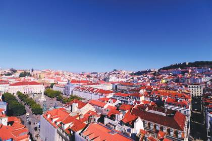
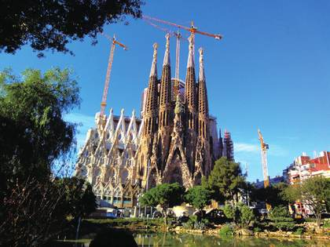
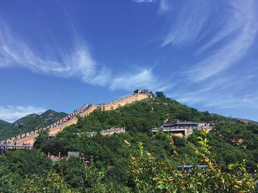
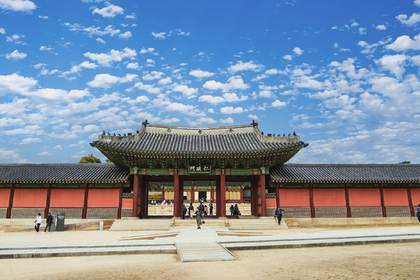
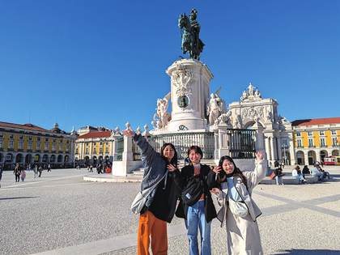
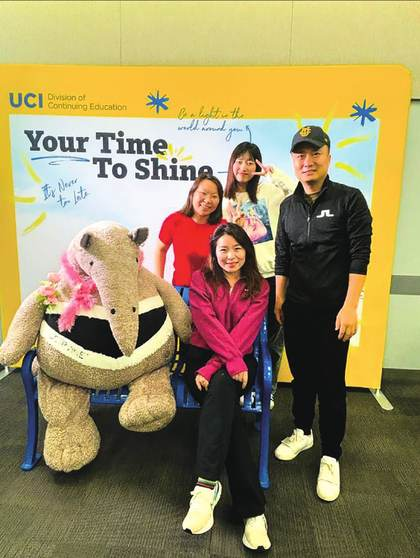
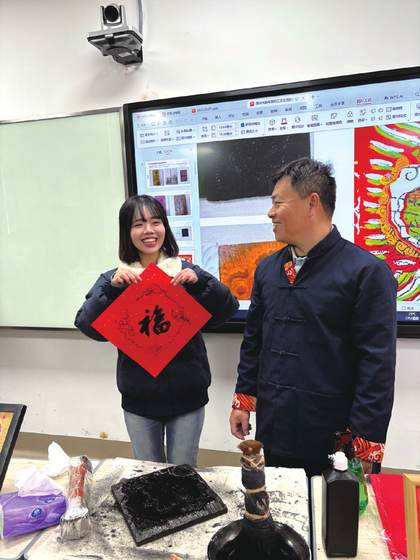
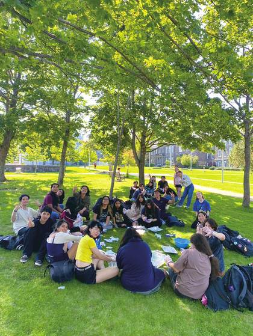

留学・語学研修ガイド
その経験が、あなたの世界を広げる。
本学外国語学部の留学・語学研修に関する情報を1か所にまとめたガイドです。下のボタン・目次・検索から知りたい情報へ移動できます。
種類・期間・対象 渡航先と期間
プログラム別の留学先 費用・奨学金
金額の目安 申込資格
GPA・語学スコア 申込期間・説明会
締切と説明会の時期 提出書類
願書・誓約書ほか 申込から帰国後まで
全体の流れ
【ひな型】掲載内容は2026年度の各募集要項に基づく暫定版です。最新情報は必ず各募集要項・担当教員で確認してください。
プログラム一覧
| 種類 | 期間 | 対象 | 選抜 |
|---|---|---|---|
| 認定留学(長期) | 8月〜4月(半年〜8か月程度) | 2・3年生(1・2年次出願) | あり |
| 交換留学(長期・新規) | 半年または通年(9月〜3月、4月〜8月) | 2・3年生(1・2年次出願) | あり |
| ショート留学 | 2月〜3月(8〜10週間) | 2・3年生(2・3年次出願) | あり |
| 語学研修(渡航型・オンライン型) | 夏期・春期(3〜4週間程度) | 1年生以上(研修先により異なる) | なし |
海外で学んだ内容は「学部共通科目」の「海外留学」などとして単位認定されます(「認定」扱いでGPAには含まれません)。
認定留学と交換留学の違い
| 交換留学 | 認定留学 | |
|---|---|---|
| 留学先授業料 | 不要 | 必要 |
| 本学の学納金 | 通常どおり納付 | 半額に減免 |
| 本学の奨学金 | なし | 成績優秀者に給付(返還不要) |
渡航先と渡航期間
認定留学(長期)
| 地域・国 | 大学(機関) | 授業期間の目安 | 認定単位(見込) |
|---|---|---|---|
| カナダ | ビクトリア大学(English Language Centre) | 9月上旬〜4月上旬 | 20〜25程度 |
| オーストラリア | グリフィス大学(GELI（Griffith English Language Institute）、ゴールドコースト校、ブリスベン・シティ校) | 9月上旬〜3月中旬 | 20〜25程度 |
| スペイン | アリカンテ大学 語学教育センター | 9月上旬〜2月下旬または3月下旬(20〜28週) | 13〜24程度 |
| ポルトガル | リスボン大学 ポルトガル言語文化センター | 10月上旬〜1月下旬(16週) | 10程度 |
| 台湾 | 銘傳大学 華語訓練センター | 9月下旬〜3月上旬(24週) | 16程度 |
| 韓国 | 慶熙大学校 国際教育院 | 9月下旬〜2月下旬(20週) | 17程度 |
交換留学
2027年度前期(半期)、または前期〜後期(1年間。出願時3年生は1年間不可)。募集3名以内。
ショート留学(2027年2〜3月)
| 大学 | 期間 | 授業期間 |
|---|---|---|
| ビクトリア大学(カナダ) | 8週間 | 2/1〜3/26(到着1/31) |
| グリフィス大学(オーストラリア) | 10週間 | 2/8〜4/16 |
| アリカンテ大学(スペイン) | 8週間 | 2/1〜3/24 |
語学研修
| 時期 | 国(機関) | 期間 | 対象 |
|---|---|---|---|
| 夏期 | カナダ(ダルハウジー大学) | 8〜9月(4週間) | 3年生以上 |
| 夏期 | 台湾 | 8月(3週間) | 2年生以上(1年生は担当教員と相談) |
| 夏期 | 韓国 | 8〜9月(3週間) | 1年生以上 |
| 夏期 | ポルトガル | 8〜9月(3週間) | 2年生以上・ポルトガル語履修者 |
| 春期 | カナダ | 2月(3週間) | 1年生以上 |
| 春期 | スペイン | 2〜3月(4週間) | 1年生以上・スペイン語履修者 |
オンライン英語研修(ダルハウジー大学語学学校):7/6〜8/27 または 9/8〜12/3。希望者なら誰でも参加可。
※アメリカ(カリフォルニア大学アーバイン校)の長期プログラムは資料が未確認のため、追加資料待ちです。
費用・奨学金
長期(認定留学)の費用目安(授業料・滞在費・渡航費を含む)
| 留学先 | 目安 |
|---|---|
| カナダ | 200〜350万円 |
| オーストラリア | 250〜350万円 |
| スペイン | 200〜250万円 |
| ポルトガル | 200〜250万円 |
| 台湾 | 85〜100万円 |
| 韓国 | 120万円程度 |
交換留学(閩南師範大学)
- 授業料:免除(本学の学納金は全額納付)
- 宿舎費:半年で約16,000円(二人部屋)
- 生活費:月6〜7万円
- 航空運賃:往復6万円前後(時期や燃油価格で変動)
- そのほか:査証(VISA)申請費、保険、健康診断書など
- 旅費補助:合格者の一部に補助の予定(詳細は決定後に通知)
ショート留学
合計で100万円以上かかります。内訳の目安は次のとおりです。
- 学費:50〜60万円
- ホームステイ:40〜50万円
- 渡航費(航空券・海外保険):20〜40万円
語学研修
- カナダ(夏期・春期):約90万円
- 台湾:約35万円
- 韓国:約27万円
- ポルトガル:約65万円
- スペイン:約60万円
- オンライン英語研修(カナダ):約43万円(7/6〜8/27)または約64万円(9/8〜12/3)
奨学金
| 種類 | 内容 |
|---|---|
| 認定留学(欧米:英語圏・スペイン・ポルトガル) | 100万円(1名)、50万円(2名) |
| 認定留学(東アジア:台湾・韓国) | 50万円(1名)、25万円(4名) |
| ショート留学 | 1名20万円、3〜5名程度(GPA2.20以上、TOEIC500点以上/スペイン語は技能検定5級またはDELE A2以上) |
| JASSO留学時特別増額貸与 | 貸与型。一時金10万〜50万円(JASSO奨学金利用者対象、返還義務あり) |
為替・渡航先の生活水準で変動します。奨学金は通算GPA上位者から選考。
申込資格
| プログラム | 学年 | GPA(通算) | 語学要件 |
|---|---|---|---|
| 認定留学 英語圏 | 1・2年次(教職課程等は除く) | 2.10以上 | TOEFL 450点以上 |
| 認定留学 スペイン | 1・2年次 | 2.10以上 | 次のいずれか
|
| 認定留学 ポルトガル | 1・2年次 | 2.10以上 | 次のいずれか
|
| 認定留学 台湾 | 1・2年次 | 2.10以上 | 次のいずれか
|
| 認定留学 韓国 | 1・2年次 | 2.10以上 | 次のいずれか
|
| 交換留学(閩南師範大学) | 2〜3年生 | 2.10以上 | 中検準4級またはHSK1級+口試初級、またはGC学科の指定科目が「優」以上 |
| ショート留学 英語圏 | 2年生・3年生(教職課程履修者は除く) | 2.10以上 | TOEIC 450点以上 |
| ショート留学 スペイン | 同上 | 2.10以上 | スペイン語技能検定6級またはDELE A1以上 |
| 語学研修 | 1年生以上(研修先により異なる) | 選抜なし | スペイン・ポルトガル等は当該言語の履修者 |
共通:選抜試験のあるプログラムは学納金の完納が必須(延納・分納不可)。出発時の学期の学納金を完納していること。父母等への事前相談・了承が必要です。募集年度ごとに基準日(GPA算定時点)が異なります。
申込期間・説明会
申込締切と選抜(2026年度募集の例)
| プログラム | 締切 | 面接など | 結果・認証式 |
|---|---|---|---|
| 認定留学(英語圏) | 3月23日 16:45 | 4月7日(日本語面接) |
|
| 認定留学(スペイン・ポルトガル・台湾・韓国) | 3月23日 16:45 | 4月7日(日本語面接) |
|
| ショート留学(2027年2〜3月) | 9月30日 16:45 | 10月6日 | (未記載) |
| 交換留学(2027年度前期) | 10月23日 16:45 | 10月26日 |
|
| 語学研修 | 説明会に参加のうえ、案内に従って申込(選抜試験なし) | ||
締切は厳守です。出願しても面接を欠席すると原則不合格となります。
説明会の実施時期(日程はまちまちなので月ごろで掲載)
| 説明会 | 実施時期 |
|---|---|
| 長期(認定)留学説明会 | 12月〜1月ごろ |
| 留学体験発表会 | 7月ごろ |
| ショート留学説明会 | 9月ごろ |
| 交換留学説明会 | 10月ごろ |
| 語学研修説明会(夏期・春期) | 3月〜4月ごろ |
詳細な日時・場所はUNIPAのお知らせで確認してください。
必要書類・提出書類
選抜のあるプログラムでは、出願時に次の書類を提出します。下のボタンを押すと、書類をダウンロードできます(確認画面が表示されます)。
| プログラム | ダウンロードする書類 | あわせて提出するもの・提出先 |
|---|---|---|
| 認定留学(長期) | 願書(準備中) 誓約書(PDF) |
|
| 交換留学(閩南師範大学) | 願書(Word)誓約書(PDF) |
|
| ショート留学 | 願書(Word)誓約書(PDF) |
|
| 語学研修 | 願書(PDF)同意書(PDF) |
|
| 留学奨学金 | 留学奨学金 振込依頼書(Excel) |
|
願書・誓約書・同意書は、本人の自筆署名と父母等の署名・押印が必要です(鉛筆書き不可)。誓約書の本文は、認定留学・交換留学・ショート留学で同じ内容です。
書類の入手先(原本)
UNIPA トップページ「リンク」→ キャビネット(大学静岡C)→ 教務課 → 草薙C(Web掲示板)→ 大学 → 外国語学部 → 海外留学 → 各プログラム。最新版はこちらで確認してください。
留学決定後に必要になりうる書類
- 入学申請書類
- ビザ申請書類
- 英文の在学証明書・成績証明書(発行に時間がかかるため早めに教務課へ)
- 健康診断書(交換留学)
申込から渡航、帰国後までの流れ
長期留学(認定留学)の例:
- 情報収集(1月ごろ)
- 外国語学習支援センター(FLSSC)の留学報告書を閲覧
- FLSSCブログで先輩の留学報告を読む(ブログへ ▶)
- 先輩・教員に相談
- 説明会に参加
- 留学先の決定(2〜3月):国・大学・費用を検討し、父母等と相談。奨学金の申請も検討
- 願書・誓約書の作成と提出(3月):父母等の承認・署名。締切厳守
- 選抜面接(4月):日本語面接(スーツ着用)→結果発表→オリエンテーション
- 留学準備(3月中旬以降)
- 留学先への入学願書の送付
- 航空券の手配
- ビザの取得
- 授業料等の送金
- 認証式・渡航説明会(6〜7月):海外保険加入手続き
- 出発・留学中(8〜9月〜):到着報告と近況報告を担当教員にメールで連絡
- 帰国後
- ガイダンスへの出席
- 長期留学報告書の作成
- 成績・時間割を提出して単位認定を申請
- 『とこはことのは』の記事作成
- オープンキャンパスの留学ブース担当
- 留学報告会での報告
ショート留学・交換留学・語学研修の流れは、追加資料をいただき次第、別ページに整理します。
留意事項・問い合わせ
- 治安の悪化や感染症の流行などにより、留学の中止や帰国を指示する場合があります。
- 入学申請・ビザ取得・航空券の予約は原則として各自で行います。
- 帰国後は本学で学業を継続し、留学体験発表会などの行事に参加することが条件です。
- 2024年度以降入学のカリキュラムの学生は卒業研究が必須です。3年次後期に長期留学する場合は計画的に履修してください。
- 留学前に『学生便覧』の「常葉大学 学生国外留学規程」を必ず読んでください。
問い合わせ先
- 学部国際プログラム委員
- 各プログラム担当教員
- 教務課
- 外国語学習支援センター(FLSSC)
担当教員名は年度ごとに更新されるため、最新のガイダンス資料で確認してください。
先輩たちの留学報告
これまでに留学に参加した学生の報告は、外国語学習支援センター(FLSSC)のブログで読めます。